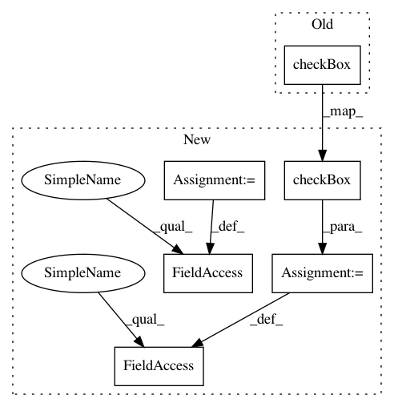

9d8208d53e13269884f9a1a2372377a028673519,Orange/widgets/data/owdatasampler.py,OWDataSampler,__init__,#OWDataSampler#,46
Before Change
form.addRow("Selected fold", self.selected_fold_spin)
self.options_box = gui.widgetBox(self.controlArea, "Options")
gui.checkBox(self.options_box, self, "use_seed",
"Replicable (deterministic) sampling",
callback=self.settings_changed)
gui.checkBox(self.options_box, self, "stratify",
"Stratify sample (when possible)",
callback=self.settings_changed)
After Change
self.sql_box.setVisible(False)
self.options_box = gui.widgetBox(self.controlArea, "Options")
self.cb_seed = gui.checkBox(
self.options_box, self, "use_seed",
"Replicable (deterministic) sampling",
callback=self.settings_changed)
self.cb_stratify = gui.checkBox(
self.options_box, self, "stratify",
"Stratify sample (when possible)", callback=self.settings_changed)
self.cb_sql_dl = gui.checkBox(
self.options_box, self, "sql_dl", "Download data to local memory",
callback=self.settings_changed)
self.cb_sql_dl.setVisible(False)
gui.button(self.controlArea, self, "Sample Data",
callback=self.commit)
In pattern: SUPERPATTERN
Frequency: 4
Non-data size: 6
Instances
Project Name: biolab/orange3
Commit Name: 9d8208d53e13269884f9a1a2372377a028673519
Time: 2015-10-27
Author: lan.zagar@fri.uni-lj.si
File Name: Orange/widgets/data/owdatasampler.py
Class Name: OWDataSampler
Method Name: __init__
Project Name: biolab/orange3
Commit Name: 7df44db4f06d82c8270590aff300ff9dd346277a
Time: 2015-10-27
Author: lan.zagar@fri.uni-lj.si
File Name: Orange/widgets/data/owselectrows.py
Class Name: OWSelectRows
Method Name: __init__
Project Name: biolab/orange3
Commit Name: 9d8208d53e13269884f9a1a2372377a028673519
Time: 2015-10-27
Author: lan.zagar@fri.uni-lj.si
File Name: Orange/widgets/data/owdatasampler.py
Class Name: OWDataSampler
Method Name: __init__
Project Name: biolab/orange3
Commit Name: 01ea9a8dcab4039a4fecd8b22c1f5dca28677038
Time: 2016-11-04
Author: pavlin.g.p@gmail.com
File Name: Orange/widgets/visualize/owpythagorastree.py
Class Name: OWPythagorasTree
Method Name: __init__
Project Name: biolab/orange3
Commit Name: f37a9c72f152fbba259b051a8787ee2415ae0e00
Time: 2015-07-27
Author: tankovesna@hotmail.com
File Name: Orange/widgets/data/owoutliers.py
Class Name: OWOutliers
Method Name: __init__